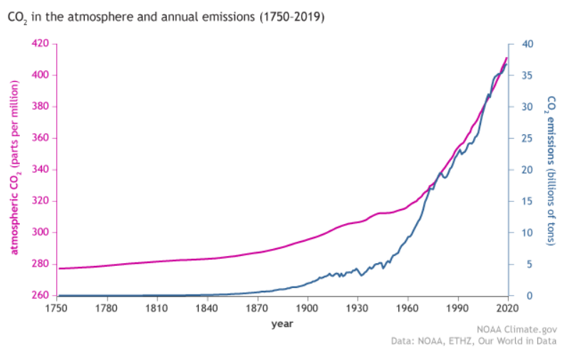

POLLUTION
As time passes, we see that our planet is becoming increasingly polluted, and it is possible to analyse the reasons and what can be done about it.
Along with amazing technological advances, the Industrial Revolution of the mid-19th century introduced new sources of air and water pollution, and by the middle of the 20th century, the effects of these changes were beginning to be felt in countries around the world.
The leading cause of air pollution is thought to be sulfur dioxide emitted from the combustion of fossil fuels like coal, petroleum for energy in power plants, and other factory combustibles, but it’s not the only one.
One more factor that has to be considered are greenhouse gases, which are constantly released from combustion of fossil fuels, such as carbon dioxide (CO2), water vapor (H2O) and nitrous oxide (N2O).
These gases are responsible for the increase of temperature in the last century, since they increase the greenhouse effect, which is a natural process that increases the temperature of Earth; a higher density of greenhouse gases will result in less solar rays being reflected by Earth’s surface.
This has led to what scientists call global warming, the rise of Earth's temperature, which has led to the destruction of ecosystems, aridification of land and more extreme natural phenomenons.
In the graph it’s possible to see the rise of CO2 in the atmosphere.

But air isn’t the only element touched by pollution: oceans and soils are constantly being polluted by the use of pesticides, which not only are dangerous for the environment, they are also dangerous for the ecosystem.
Another problem humanity has to address is the disposal of all of the waste that is produced, such as plastic, which is by far the most dangerous to the environment, because of how mass produced it is and because of how hard it is to recycle it.
Dealing with these issues is extremely hard, they require great expertise and money to be dealt with, but they are also urgent (most urgent being global warming): if not dealt with in the next 50 years, it’s possible the change won’t be sustainable for the majority of the population.
While talking about pollution it’s important to remember that Earth’s resources are limited, such as oil and natural gas, which are the main ways men produce energy; this means that it won’t be possible to use them forever. The main solution to this problem is the transition to green and renewable energy, but it doesn’t have to be: there is a universe around us full of resources and possibilities we have yet to discover. By exploring our solar system it would be possible to achieve goals that 100 years ago couldn’t even be thought of, such as the creation of an interplanetary society.